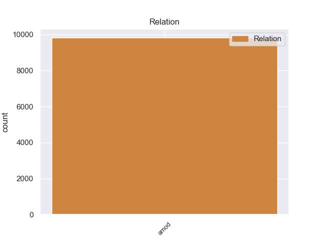
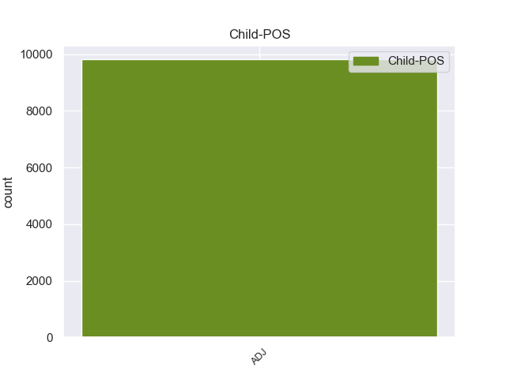

Distribution of features within this leaf



Agreement Rules sorted by frequency.
- When the dependent token is the adjectival modifier(amod) of the head token, and the head token is NOUN and the dependent token is ADJ.
1 उन्होंने _ _ _ _ 0 _ _ _
2 यहां _ _ _ _ 0 _ _ _
3 वेटिकन _ _ _ _ 0 _ _ _
4 दूतावास _ _ _ _ 0 _ _ _
5 में _ _ _ _ 0 _ _ _
6 एक _ _ _ _ 0 _ _ _
7 शोक _ _ _ _ 0 _ _ _
8 पुस्तिका _ _ _ _ 0 _ _ _
9 पर _ _ _ _ 0 _ _ _
10 हस्ताक्षर _ _ _ _ 0 _ _ _
11 कर _ _ _ _ 0 _ _ _
12 पोप _ _ _ _ 0 _ _ _
13 जॉन _ _ _ _ 0 _ _ _
14 पॉल _ _ _ _ 0 _ _ _
15 द्वितीय _ _ _ _ 0 _ _ _
16 के _ _ _ _ 0 _ _ _
17 निधन _ _ _ _ 0 _ _ _
18 पर _ _ _ _ 0 _ _ _
19 गहरा गहरा ADJ JJ Case=Nom|Gender=Masc|Number=Sing 20 amod _ ChunkId=NP8|ChunkType=child|Translit=gaharā
20 दुख दुख NOUN NN Case=Nom|Gender=Masc|Number=Sing|Person=3 0 _ _ _
21 प्रकट _ _ _ _ 0 _ _ _
22 किया _ _ _ _ 0 _ _ _
23 । _ _ _ _ 0 _ _ _
1 ७० _ _ _ _ 0 _ _ _
2 वर्षीय _ _ _ _ 0 _ _ _
3 इस _ _ _ _ 0 _ _ _
4 अहिंसावादी अहिंसावादी ADJ JJ Case=Acc 0 _ _ _
5 तिब्बती तिब्बती ADJ JJ Case=Acc 4 amod _ ChunkId=NP|ChunkType=child|Translit=tibbatī
6 नेता _ _ _ _ 0 _ _ _
7 ने _ _ _ _ 0 _ _ _
8 यह _ _ _ _ 0 _ _ _
9 भी _ _ _ _ 0 _ _ _
10 कहा _ _ _ _ 0 _ _ _
11 कि _ _ _ _ 0 _ _ _
12 वे _ _ _ _ 0 _ _ _
13 चीन _ _ _ _ 0 _ _ _
14 से _ _ _ _ 0 _ _ _
15 अलगाव _ _ _ _ 0 _ _ _
16 की _ _ _ _ 0 _ _ _
17 बात _ _ _ _ 0 _ _ _
18 नहीं _ _ _ _ 0 _ _ _
19 कर _ _ _ _ 0 _ _ _
20 रहे _ _ _ _ 0 _ _ _
21 हैं _ _ _ _ 0 _ _ _
22 बल्कि _ _ _ _ 0 _ _ _
23 वे _ _ _ _ 0 _ _ _
24 तो _ _ _ _ 0 _ _ _
25 चीनी _ _ _ _ 0 _ _ _
26 संविधान _ _ _ _ 0 _ _ _
27 के _ _ _ _ 0 _ _ _
28 दायरे _ _ _ _ 0 _ _ _
29 में _ _ _ _ 0 _ _ _
30 ही _ _ _ _ 0 _ _ _
31 तिब्बत _ _ _ _ 0 _ _ _
32 समस्या _ _ _ _ 0 _ _ _
33 का _ _ _ _ 0 _ _ _
34 हल _ _ _ _ 0 _ _ _
35 चाहते _ _ _ _ 0 _ _ _
36 हैं _ _ _ _ 0 _ _ _
37 । _ _ _ _ 0 _ _ _
1 दूसरी दूसरा ADJ QO Case=Nom|Gender=Fem|Number=Sing|NumType=Ord 2 amod _ ChunkId=NP|ChunkType=child|Translit=dūsarī
2 ओर ओर ADV NST AdpType=Post|Case=Nom|Gender=Fem|Number=Sing|Person=3 0 _ _ _
3 पाकिस्तान _ _ _ _ 0 _ _ _
4 भारत _ _ _ _ 0 _ _ _
5 को _ _ _ _ 0 _ _ _
6 इस _ _ _ _ 0 _ _ _
7 परियोजना _ _ _ _ 0 _ _ _
8 की _ _ _ _ 0 _ _ _
9 सुरक्षा _ _ _ _ 0 _ _ _
10 का _ _ _ _ 0 _ _ _
11 आश्वासन _ _ _ _ 0 _ _ _
12 देता _ _ _ _ 0 _ _ _
13 रहा _ _ _ _ 0 _ _ _
14 है _ _ _ _ 0 _ _ _
15 । _ _ _ _ 0 _ _ _
1 राष्ट्रपति _ _ _ _ 0 _ _ _
2 मुशर्रफ _ _ _ _ 0 _ _ _
3 ने _ _ _ _ 0 _ _ _
4 पकड़े _ _ _ _ 0 _ _ _
5 गए _ _ _ _ 0 _ _ _
6 आतंकी _ _ _ _ 0 _ _ _
7 का _ _ _ _ 0 _ _ _
8 नाम _ _ _ _ 0 _ _ _
9 नहीं _ _ _ _ 0 _ _ _
10 बताया _ _ _ _ 0 _ _ _
11 लेकिन _ _ _ _ 0 _ _ _
12 ' _ _ _ _ 0 _ _ _
13 द _ _ _ _ 0 _ _ _
14 पाकिस्तान _ _ _ _ 0 _ _ _
15 अब्जर्वर _ _ _ _ 0 _ _ _
16 ' _ _ _ _ 0 _ _ _
17 नामक _ _ _ _ 0 _ _ _
18 दैनिक _ _ _ _ 0 _ _ _
19 ने _ _ _ _ 0 _ _ _
20 एक _ _ _ _ 0 _ _ _
21 अधिकारी _ _ _ _ 0 _ _ _
22 के _ _ _ _ 0 _ _ _
23 हवाले _ _ _ _ 0 _ _ _
24 से _ _ _ _ 0 _ _ _
25 लिखा _ _ _ _ 0 _ _ _
26 है _ _ _ _ 0 _ _ _
27 कि _ _ _ _ 0 _ _ _
28 यह _ _ _ _ 0 _ _ _
29 और और ADJ JJ Case=Nom 30 amod _ ChunkId=NP8|ChunkType=child|Translit=aura
30 कोई कोई PRON PRP Case=Nom|Number=Sing|Person=3|PronType=Prs 0 _ _ _
31 नहीं _ _ _ _ 0 _ _ _
32 कुख्यात _ _ _ _ 0 _ _ _
33 अहमद _ _ _ _ 0 _ _ _
34 खलफान _ _ _ _ 0 _ _ _
35 घैलानी _ _ _ _ 0 _ _ _
36 है _ _ _ _ 0 _ _ _
37 । _ _ _ _ 0 _ _ _
1 अंबानी _ _ _ _ 0 _ _ _
2 ने _ _ _ _ 0 _ _ _
3 कहा _ _ _ _ 0 _ _ _
4 कि _ _ _ _ 0 _ _ _
5 कंपनी _ _ _ _ 0 _ _ _
6 तेल _ _ _ _ 0 _ _ _
7 व _ _ _ _ 0 _ _ _
8 गैस _ _ _ _ 0 _ _ _
9 खोजने _ _ _ _ 0 _ _ _
10 के _ _ _ _ 0 _ _ _
11 मद _ _ _ _ 0 _ _ _
12 में _ _ _ _ 0 _ _ _
13 अगले अगला ADJ JJ Case=Acc|Gender=Masc|Number=Plur 14 amod _ ChunkId=NP6|ChunkType=child|Translit=agale
14 24 24 NUM QC Case=Acc|NumType=Card 0 _ _ _
15 से _ _ _ _ 0 _ _ _
16 30 _ _ _ _ 0 _ _ _
17 महीनों _ _ _ _ 0 _ _ _
18 में _ _ _ _ 0 _ _ _
19 2,500 _ _ _ _ 0 _ _ _
20 करोड़ _ _ _ _ 0 _ _ _
21 रुपये _ _ _ _ 0 _ _ _
22 और _ _ _ _ 0 _ _ _
23 निवेश _ _ _ _ 0 _ _ _
24 करेगी _ _ _ _ 0 _ _ _
25 । _ _ _ _ 0 _ _ _
Disagree Examples:
1 खूबसूरत _ _ _ _ 0 _ _ _
2 बिल्डिंगों _ _ _ _ 0 _ _ _
3 से _ _ _ _ 0 _ _ _
4 सजा _ _ _ _ 0 _ _ _
5 आधुनिक _ _ _ _ 0 _ _ _
6 शहर _ _ _ _ 0 _ _ _
7 चमचमाती _ _ _ _ 0 _ _ _
8 रोशनी _ _ _ _ 0 _ _ _
9 .... _ _ _ _ 0 _ _ _
10 साफ _ _ _ _ 0 _ _ _
11 - _ _ _ _ 0 _ _ _
12 सुथरी _ _ _ _ 0 _ _ _
13 सड़क _ _ _ _ 0 _ _ _
14 ... _ _ _ _ 0 _ _ _
15 तेज तेज ADJ JJ Case=Acc 16 amod _ ChunkId=NP5|ChunkType=child|Translit=teja
16 जिंदगी जिंदगी NOUN NN Case=Nom|Gender=Fem|Number=Sing|Person=3 0 _ _ _
17 और _ _ _ _ 0 _ _ _
18 एक _ _ _ _ 0 _ _ _
19 भूकम्प _ _ _ _ 0 _ _ _
20 से _ _ _ _ 0 _ _ _
21 खूबसूरत _ _ _ _ 0 _ _ _
22 शहर _ _ _ _ 0 _ _ _
23 का _ _ _ _ 0 _ _ _
24 एकाएक _ _ _ _ 0 _ _ _
25 खाक _ _ _ _ 0 _ _ _
26 हो _ _ _ _ 0 _ _ _
27 जाना _ _ _ _ 0 _ _ _
28 यह _ _ _ _ 0 _ _ _
29 मंजर _ _ _ _ 0 _ _ _
30 सोचकर _ _ _ _ 0 _ _ _
31 ही _ _ _ _ 0 _ _ _
32 भयावह _ _ _ _ 0 _ _ _
33 लगता _ _ _ _ 0 _ _ _
34 है _ _ _ _ 0 _ _ _
35 , _ _ _ _ 0 _ _ _
36 लेकिन _ _ _ _ 0 _ _ _
37 अमेरिका _ _ _ _ 0 _ _ _
38 के _ _ _ _ 0 _ _ _
39 फ्लोरिडा _ _ _ _ 0 _ _ _
40 प्रांत _ _ _ _ 0 _ _ _
41 के _ _ _ _ 0 _ _ _
42 नागरिकों _ _ _ _ 0 _ _ _
43 के _ _ _ _ 0 _ _ _
44 लिए _ _ _ _ 0 _ _ _
45 यह _ _ _ _ 0 _ _ _
46 कोई _ _ _ _ 0 _ _ _
47 नई _ _ _ _ 0 _ _ _
48 बात _ _ _ _ 0 _ _ _
49 नहीं _ _ _ _ 0 _ _ _
50 है _ _ _ _ 0 _ _ _
51 । _ _ _ _ 0 _ _ _
1 यहाँ _ _ _ _ 0 _ _ _
2 के _ _ _ _ 0 _ _ _
3 मैजिकल _ _ _ _ 0 _ _ _
4 कासल _ _ _ _ 0 _ _ _
5 में _ _ _ _ 0 _ _ _
6 ' _ _ _ _ 0 _ _ _
7 विश _ _ _ _ 0 _ _ _
8 कम _ _ _ _ 0 _ _ _
9 ट्रू _ _ _ _ 0 _ _ _
10 ' _ _ _ _ 0 _ _ _
11 नामक नामक ADJ JJ Case=Acc 16 amod _ ChunkId=JJP|ChunkType=head|Translit=nāmaka
12 12 _ _ _ _ 0 _ _ _
13 मिनट _ _ _ _ 0 _ _ _
14 की _ _ _ _ 0 _ _ _
15 खूबसूरत _ _ _ _ 0 _ _ _
16 फिल्म फिल्म NOUN NN Case=Nom|Gender=Fem|Number=Sing|Person=3 0 _ _ _
17 दिखाई _ _ _ _ 0 _ _ _
18 जाती _ _ _ _ 0 _ _ _
19 है _ _ _ _ 0 _ _ _
20 । _ _ _ _ 0 _ _ _
1 यहाँ _ _ _ _ 0 _ _ _
2 सस्ते सस्ता ADJ JJ Case=Nom|Gender=Masc|Number=Plur 4 amod _ ChunkId=NP2|ChunkType=child|Translit=saste
3 टूरिस्ट _ _ _ _ 0 _ _ _
4 हाउस हाउस NOUN NN Case=Acc|Gender=Masc|Number=Sing|Person=3 0 _ _ _
5 से _ _ _ _ 0 _ _ _
6 लेकर _ _ _ _ 0 _ _ _
7 मँहगे _ _ _ _ 0 _ _ _
8 आलीशान _ _ _ _ 0 _ _ _
9 फाइव _ _ _ _ 0 _ _ _
10 स्टार _ _ _ _ 0 _ _ _
11 होटल _ _ _ _ 0 _ _ _
12 हैं _ _ _ _ 0 _ _ _
13 । _ _ _ _ 0 _ _ _
1 किले _ _ _ _ 0 _ _ _
2 के _ _ _ _ 0 _ _ _
3 ऊपर _ _ _ _ 0 _ _ _
4 कई _ _ _ _ 0 _ _ _
5 सदियों _ _ _ _ 0 _ _ _
6 तक _ _ _ _ 0 _ _ _
7 अलग अलग ADJ JJ Case=Nom 10 amod _ ChunkId=NP3|ChunkType=child|Translit=alaga
8 - _ _ _ _ 0 _ _ _
9 अलग _ _ _ _ 0 _ _ _
10 राजघरानों राजघराना NOUN NN Case=Acc|Gender=Masc|Number=Plur|Person=3 0 _ _ _
11 ने _ _ _ _ 0 _ _ _
12 राज _ _ _ _ 0 _ _ _
13 किया _ _ _ _ 0 _ _ _
14 है _ _ _ _ 0 _ _ _
15 . _ _ _ _ 0 _ _ _
1 मंदिर _ _ _ _ 0 _ _ _
2 परिसर _ _ _ _ 0 _ _ _
3 में _ _ _ _ 0 _ _ _
4 तीन _ _ _ _ 0 _ _ _
5 से _ _ _ _ 0 _ _ _
6 चार _ _ _ _ 0 _ _ _
7 अलग अलग ADJ JJ Case=Nom 10 amod _ ChunkId=NP4|ChunkType=child|Translit=alaga
8 - _ _ _ _ 0 _ _ _
9 अलग _ _ _ _ 0 _ _ _
10 देवताओं देवता NOUN NN Case=Acc|Gender=Masc|Number=Plur|Person=3 0 _ _ _
11 के _ _ _ _ 0 _ _ _
12 छोटे _ _ _ _ 0 _ _ _
13 मंदिर _ _ _ _ 0 _ _ _
14 हैं _ _ _ _ 0 _ _ _
15 । _ _ _ _ 0 _ _ _